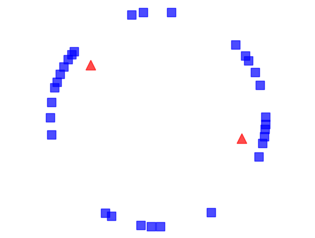
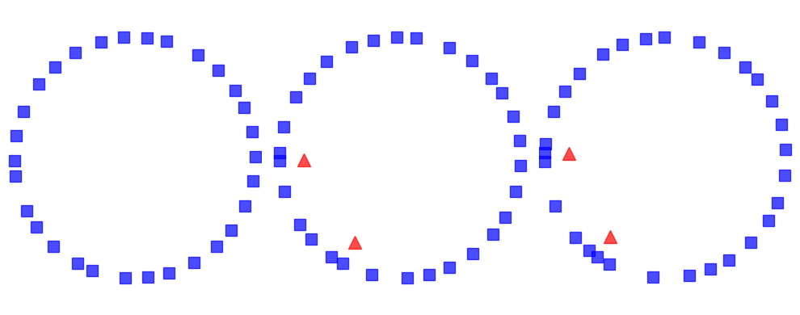
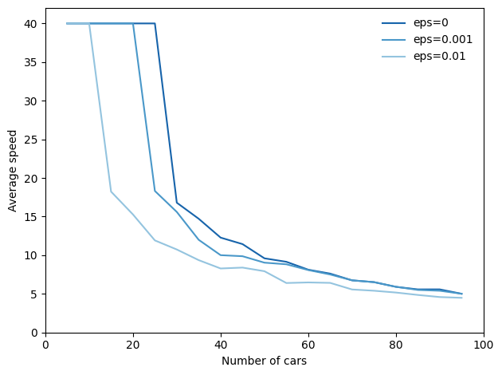
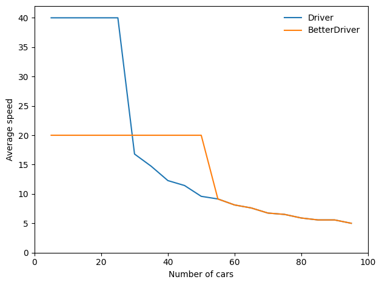

The second edition of Think Complexity is available from Bookshop.org and Amazon (those are affiliate links). If you are enjoying the free, online version, consider buying me a coffee.
10. Herds, Flocks, and Traffic Jams#
The agent-based models in the previous chapter are based on grids: the agents occupy discrete locations in two-dimensional space. In this chapter we consider agents that move in continuous space, including simulated cars on a one-dimensional highway and simulated birds in three-dimensional space.
Click here to run this notebook on Colab.
import matplotlib.pyplot as plt
import numpy as np
Show code cell content
from os.path import basename, exists
def download(url):
filename = basename(url)
if not exists(filename):
from urllib.request import urlretrieve
local, _ = urlretrieve(url, filename)
print('Downloaded ' + local)
download('https://github.com/AllenDowney/ThinkComplexity/raw/v3/nb/utils.py')
download('https://github.com/AllenDowney/ThinkComplexity/raw/v3/nb/Cell2D.py')
from utils import decorate, savefig
# make a directory for figures
!mkdir -p figs
10.1. Traffic jams#
What causes traffic jams? Sometimes there is an obvious cause, like an accident, a speed trap, or something else that disturbs the flow of traffic. But other times traffic jams appear for no apparent reason.
Agent-based models can help explain spontaneous traffic jams. As an example, I implement a highway simulation based on a model in Mitchell Resnick’s book, Turtles, Termites and Traffic Jams.
The agents in this model are drivers. Here’s the definition for the Driver class:
class Driver:
def __init__(self, loc, speed=4):
"""Initialize the attributes.
loc: position on track, in miles
speed: speed in miles per hour
"""
self.start = loc
self.loc = loc
self.speed = speed
def choose_acceleration(self, dist):
"""Chooses acceleration based on distance.
dist: distance from the car in front
returns: acceleration
"""
return 1
def set_odometer(self):
self.start = self.loc
def read_odometer(self):
return self.loc - self.start
The attributes loc and speed are the location and speed of the driver. set_odometer and read_odometer keep track of the distance a driver travels, which we’ll use to compute average speed.
This implementation of choose_acceleration is simple: it always accelerates at the maximum rate.
Here’s the class that represents the “highway”:
from Cell2D import Cell2D
class Highway(Cell2D):
max_acc = 1
min_acc = -10
speed_limit = 40
def __init__(self, n=10, length=1000, eps=0, constructor=Driver):
"""Initializes the attributes.
n: number of drivers
length: length of the track
eps: variability in speed
constructor: function used to instantiate drivers
"""
self.length = length
self.eps = eps
self.crashes = 0
# create the drivers
locs = np.linspace(0, length, n, endpoint=False)
self.drivers = [constructor(loc) for loc in locs]
# and link them up
for i in range(n):
j = (i+1) % n
self.drivers[i].next = self.drivers[j]
def distance(self, driver):
"""Distance from `driver` to next driver.
driver: Driver object
"""
dist = driver.next.loc - driver.loc
# fix wraparound
if dist < 0:
dist += self.length
return dist
def set_odometers(self):
return [driver.set_odometer()
for driver in self.drivers]
def read_odometers(self):
return np.mean([driver.read_odometer()
for driver in self.drivers])
def draw(self):
"""Draws the drivers and shows collisions.
"""
drivers = self.drivers
xs, ys = self.get_coords(drivers)
plt.plot(xs, ys, 'bs', markersize=10, alpha=0.7)
stopped = [driver for driver in self.drivers
if driver.speed==0]
xs, ys = self.get_coords(stopped, r=0.8)
plt.plot(xs, ys, 'r^', markersize=12, alpha=0.7)
plt.axis('off')
plt.axis('equal')
plt.xlim([-1.05, 1.05])
plt.ylim([-1.05, 1.05])
def get_coords(self, drivers, r=1):
"""Gets the coordinates of the drivers.
Transforms from location on the track to (x, y) on a circle.
drivers: sequence of Driver
r: radius of the circle
returns: tuple of sequences, (xs, ys)
"""
locs = np.array([driver.loc for driver in drivers])
locs *= 2 * np.pi / self.length
xs = r * np.cos(locs)
ys = r * np.sin(locs)
return xs, ys
n is the number of cars, length is the length of the highway, and eps is the amount of random noise we’ll add to the system. constructor is the function used to make the drivers; by default it is Driver.
locs contains the locations of the drivers; the NumPy function linspace creates an array of n locations equally spaced between 0 and length.
The drivers attribute is a list of Driver objects. The for loop links them so each Driver contains a reference to the next. The highway is circular, so the last Driver contains a reference to the first.
During each time step, the Highway moves each of the drivers:
%%add_method_to Highway
def step(self):
"""Performs one time step."""
for driver in self.drivers:
self.move(driver)
The move method lets the Driver choose its acceleration. Then move computes the updated speed and position. Here’s the implementation:
%%add_method_to Highway
def move(self, driver):
"""Updates `driver`.
driver: Driver object
"""
# get the distance to the next driver
dist = self.distance(driver)
# let the driver choose acceleration
acc = driver.choose_acceleration(dist)
acc = min(acc, self.max_acc)
acc = max(acc, self.min_acc)
speed = driver.speed + acc
# add random noise to speed
speed *= np.random.uniform(1-self.eps, 1+self.eps)
# keep it nonnegative and under the speed limit
speed = max(speed, 0)
speed = min(speed, self.speed_limit)
# if current speed would collide with next driver, stop
if speed > dist:
speed = 0
self.crashes += 1
# update speed and loc
driver.speed = speed
driver.loc += speed
dist is the distance between driver and the next driver ahead. This distance is passed to choose_acceleration, which specifies the behavior of the driver. This is the only decision the driver gets to make; everything else is determined by the “physics” of the simulation.
accis acceleration, which is bounded bymin_accandmax_acc. In my implementation, cars can accelerate withmax_acc=1and brake withmin_acc=-10.speedis the old speed plus the requested acceleration, but then we make some adjustments. First, we add random noise tospeed, because the world is not perfect.epsdetermines the magnitude of the relative error; for example, ifepsis 0.02,speedis multiplied by a random factor between 0.98 and 1.02.Speed is bounded between 0 and
speed_limit, which is 40 in my implementation, so cars are not allowed to go backward or speed.If the requested speed would cause a collision with the next car,
speedis set to 0.Finally, we update the
speedandlocattributes ofdriver.
Since the cars start out equally spaced, we expect them all to accelerate until they reach the speed limit, or until their speed exceeds the space between them. At that point, at least one “collision” will occur, causing some cars to stop.
Here’s an animation of the process, starting with 30 cars and eps=0.02:
highway = Highway(30, eps=0.02)
highway.animate(frames=50, interval=0.2)

The following figure shows a few steps in this process. Squares indicate the position of the drivers; triangles indicate places where one driver has to brake to avoid another.
from utils import three_frame
highway = Highway(30, eps=0.02)
three_frame(highway, [16, 1, 1], seed=22)
savefig('figs/chap10-1')
Saving figure to file figs/chap10-1

On the left is the configuration after 16 time steps, with the highway mapped to a circle. Because of random noise, some cars are going faster than others, and the spacing has become uneven.
During the next time step (middle) there are two collisions, indicated by the triangles.
During the next time step (right) two cars collide with the stopped cars, and we can see the initial formation of a traffic jam. Once a jam forms, it tends to persist, with additional cars approaching from behind and colliding, and with cars in the front accelerating away.
Under some conditions, the jam itself propagates backwards, as you can see in the animation.
10.2. Random perturbation#
As the number of cars increases, traffic jams become more severe. To see how much, the following function runs simulations with a range of numbers of cars and computes the average speed the cars are able to achieve.
def run_simulation(eps, constructor=Driver, iters=100):
res = []
for n in range(5, 100, 5):
highway = Highway(n, eps=eps, constructor=constructor)
for i in range(iters):
highway.step()
highway.set_odometers()
for i in range(iters):
highway.step()
res.append((n, highway.read_odometers() / iters))
return np.transpose(res)
The following figure shows average speed as a function of the number of cars, for three magnitudes of added random noise.
np.random.seed(20)
from utils import set_palette
set_palette('Blues', 4, reverse=True)
results = {}
for eps in [0.0, 0.001, 0.01]:
xs, ys = run_simulation(eps)
results[eps] = xs, ys
plt.plot(xs, ys, label='eps=%g' % eps)
decorate(xlabel='Number of cars',
ylabel='Average speed',
xlim=[0, 100], ylim=[0, 42])
savefig('figs/chap10-2')
Saving figure to file figs/chap10-2

The top line shows results with eps=0, that is, with no random variation in speed. With 25 or fewer cars, the spacing between cars is at least 40, which allows cars to reach and maintain the maximum speed, which is 40. With more than 25 cars, traffic jams form and the average speed drops quickly.
This effect is a direct result of the physics of the simulation, so it should not be surprising. If the length of the road is 1000, the spacing between n cars is 1000/n. And since cars can’t move faster than the space in front of them, the highest average speed we expect is 1000/n or 40, whichever is less.
But that’s the best case scenario. With just a small amount of randomness, things get much worse.
The figure also shows results with eps=0.001 and eps=0.01, which correspond to errors in speed of 0.1% and 1%.
With 0.1% errors, the capacity of the highway drops from 25 to 20 (by “capacity” I mean the maximum number of cars that can reach and sustain the speed limit). And with 1% errors, the capacity drops to 10. Ugh.
Here’s the computation, counting an average speed above 39 as reaching the speed limit:
for eps, (xs, ys) in results.items():
capacity = max(n for n, y in zip(xs, ys) if y > 39)
print(f'eps={eps:g}: capacity {capacity:.0f}')
eps=0: capacity 25
eps=0.001: capacity 20
eps=0.01: capacity 10
As one of the exercises at the end of this chapter, you’ll have a chance to design a better driver; that is, you will experiment with different strategies in choose_acceleration and see if you can find driver behaviors that improve average speed.
10.3. Boids#
In 1987 Craig Reynolds published “Flocks, herds and schools: A distributed behavioral model”, which describes an agent-based model of herd behavior. You can download his paper from https://thinkcomplex.com/boid.
Agents in this model are called “Boids”, which is both a contraction of “bird-oid” and an accented pronunciation of “bird” (although Boids are also used to model fish and herding land animals).
Each agent simulates three behaviors:
Flock centering: Move toward the center of the flock.
Collision avoidance: Avoid obstacles, including other Boids.
Velocity matching: Align velocity (speed and direction) with neighboring Boids.
Boids make decisions based on local information only; each Boid only sees (or pays attention to) other Boids in its field of vision.
In the repository for this book, you will find Boids7.py, which contains my implementation of Boids, based in part on the description in Gary William Flake’s book, The Computational Beauty of Nature.
My implementation uses VPython, which is a library that provides 3-D graphics. VPython provides a Vector object, which I use to represent the position and velocity of Boids in three dimensions. You can read about them at https://thinkcomplex.com/vector.
VPython doesn’t run in this notebook (or on Colab), so the code in the next two sections is shown but not run. One of the exercises at the end of the chapter explains how to run Boids7.py.
10.4. The Boid algorithm#
Boids7.py defines two classes: Boid, which implements the Boid behaviors, and World, which contains a list of Boids and a “carrot” the Boids are attracted to.
The Boid class defines the following methods:
center: Finds other Boids within range and computes a vector toward their centroid.avoid: Finds objects, including other Boids, within a given range, and computes a vector that points away from their centroid.align: Finds other Boids within range and computes the average of their headings.love: Computes a vector that points toward the carrot.
Here’s the implementation of center:
def center(self, boids, radius=1, angle=1):
neighbors = self.get_neighbors(boids, radius, angle)
vecs = [boid.pos for boid in neighbors]
return self.vector_toward_center(vecs)
The parameters radius and angle are the radius and angle of the field of view, which determines which other Boids are taken into consideration. radius is in arbitrary units of length; angle is in radians.
center uses get_neighbors to get a list of Boid objects that are in the field of view. vecs is a list of Vector objects that represent their positions.
Finally, vector_toward_center computes a Vector that points from self to the centroid of neighbors.
Here’s how get_neighbors works:
def get_neighbors(self, boids, radius, angle):
neighbors = []
for boid in boids:
if boid is self:
continue
offset = boid.pos - self.pos
# if not in range, skip it
if offset.mag > radius:
continue
# if not within viewing angle, skip it
diff = self.vel.diff_angle(offset)
if abs(diff) > angle:
continue
# otherwise add it to the list
neighbors.append(boid)
return neighbors
For each other Boid, get_neighbors uses vector subtraction to compute the vector from self to boid. The magnitude of this vector is the distance between them; if this magnitude exceeds radius, we ignore boid.
diff_angle computes the angle between the velocity of self, which points in the direction the Boid is heading, and the position of boid. If this angle exceeds angle, we ignore boid.
Otherwise boid is in view, so we add it to neighbors.
Now here’s the implementation of vector_toward_center, which computes a vector from self to the centroid of its neighbors.
def vector_toward_center(self, vecs):
if vecs:
center = np.mean(vecs)
toward = vector(center - self.pos)
return limit_vector(toward)
else:
return null_vector
VPython vectors work with NumPy, so np.mean computes the mean of vecs, which is a sequence of vectors. limit_vector limits the magnitude of the result to 1; null_vector has magnitude 0.
We use the same helper methods to implement avoid:
def avoid(self, boids, carrot, radius=0.3, angle=np.pi):
objects = boids + [carrot]
neighbors = self.get_neighbors(objects, radius, angle)
vecs = [boid.pos for boid in neighbors]
return -self.vector_toward_center(vecs)
avoid is similar to center, but it takes into account the carrot as well as the other Boids. Also, the parameters are different: radius is smaller, so Boids only avoid objects that are too close, and angle is wider, so Boids avoid objects from all directions. Finally, the result from vector_toward_center is negated, so it points away from the centroid of any objects that are too close.
Here’s the implementation of align:
def align(self, boids, radius=0.5, angle=1):
neighbors = self.get_neighbors(boids, radius, angle)
vecs = [boid.vel for boid in neighbors]
return self.vector_toward_center(vecs)
align is also similar to center; the big difference is that it computes the average of the neighbors’ velocities, rather than their positions. If the neighbors point in a particular direction, the Boid tends to steer toward that direction.
Finally, love computes a vector that points in the direction of the carrot.
def love(self, carrot):
toward = carrot.pos - self.pos
return limit_vector(toward)
The results from center, avoid, align, and love are what Reynolds calls “acceleration requests”, where each request is intended to achieve a different goal.
10.5. Arbitration#
To arbitrate among these possibly conflicting goals, we compute a weighted sum of the four requests:
def set_goal(self, boids, carrot):
w_avoid = 10
w_center = 3
w_align = 1
w_love = 10
self.goal = (w_center * self.center(boids) +
w_avoid * self.avoid(boids, carrot) +
w_align * self.align(boids) +
w_love * self.love(carrot))
self.goal.mag = 1
w_center, w_avoid, and the other weights determine the importance of the acceleration requests. Usually w_avoid is relatively high and w_align is relatively low.
After computing a goal for each Boid, we update their velocity and position:
def move(self, mu=0.1, dt=0.1):
self.vel = (1-mu) * self.vel + mu * self.goal
self.vel.mag = 1
self.pos += dt * self.vel
self.axis = self.length * self.vel
The new velocity is the weighted sum of the old velocity and the goal. The parameter mu determines how quickly the birds can change speed and direction. Then we normalize velocity so its magnitude is 1, and orient the axis of the Boid to point in the direction it is moving.
To update position, we multiply velocity by the time step, dt, to get the change in position. Finally, we update axis so the orientation of the Boid when it is drawn is aligned with its velocity.
Many parameters influence flock behavior, including the radius, angle and weight for each behavior, as well as maneuverability, mu. These parameters determine the ability of the Boids to form and maintain a flock, and the patterns of motion and organization within the flock. For some settings, the Boids resemble a flock of birds; other settings resemble a school of fish or a cloud of flying insects.
As one of the exercises at the end of this chapter, you can modify these parameters and see how they affect Boid behavior.
10.6. Emergence and free will#
Many complex systems have properties, as a whole, that their components do not:
The Rule 30 cellular automaton is deterministic, and the rules that govern its evolution are completely known. Nevertheless, it generates a sequence that is statistically indistinguishable from random.
The agents in Schelling’s model are not racist, but the outcome of their interactions is a high degree of segregation.
Agents in Sugarscape form waves that move diagonally even though the agents cannot.
Traffic jams move backward even though the cars in them are moving forward.
Flocks and herds behave as if they are centrally organized even though the animals in them are making individual decisions based on local information.
These examples suggest an approach to several old and challenging questions, including the problems of consciousness and free will.
Free will is the ability to make choices, but if our bodies and brains are governed by deterministic physical laws, our choices are completely determined.
Philosophers and scientists have proposed many possible resolutions to this apparent conflict; for example:
William James proposed a two-stage model in which possible actions are generated by a random process and then selected by a deterministic process. In that case our actions are fundamentally unpredictable because the process that generates them includes a random element.
David Hume suggested that our perception of making choices is an illusion; in that case, our actions are deterministic because the system that produces them is deterministic.
These arguments reconcile the conflict in opposite ways, but they agree that there is a conflict: the system cannot have free will if the parts are deterministic.
The complex systems in this book suggest the alternative that free will, at the level of options and decisions, is compatible with determinism at the level of neurons (or some lower level). In the same way that a traffic jam moves backward while the cars move forward, a person can have free will even though neurons don’t.
10.7. Exercises#
Exercise: In the traffic jam simulation, define a class, BetterDriver,
that inherits from Driver and overrides choose_acceleration.
See if you can define driving rules that do better than the basic
implementation in Driver. You might try to achieve higher
average speed, or a lower number of collisions.
Here’s a first attempt:
class BetterDriver(Driver):
def choose_acceleration(self, d):
if self.speed < 20:
return 1
else:
return 0
The following loop runs simulations with Driver and BetterDriver, and plots average speed as a function of the number of cars.
And it prints the area under the curves as one way (but certainly not the only way) to quantify the effect of driving behavior on average speed over the range of densities.
from scipy.integrate import trapezoid
for constructor in [Driver, BetterDriver]:
xs, ys = run_simulation(eps=0.0, constructor=constructor)
plt.plot(xs, ys, label=constructor.__name__)
print(constructor.__name__, trapezoid(ys, xs))
decorate(xlabel='Number of cars',
ylabel='Average speed',
xlim=[0, 100], ylim=[0, 42])
Driver 1512.925
BetterDriver 1238.725

BetterDriver is a little better in the sense that it keeps traffic moving smoothly at medium densities. However:
At high densities, it has almost no effect, and
At low densities, it is substantially worse.
As a result, the total area under the curve is much less.
See if you can write rules for the agents that maximize the area under the curve.
Exercise: The code for my Boid implementation is in Boids7.py in the repository for this book. To run it, you will need VPython, a library for 3-D graphics and animation, which you can install by running the following in a terminal:
pip install vpython
Then run Boids7.py. It should either launch a browser or create a window in a running browser, and create an animated display showing Boids, as white cones, circling a red sphere, which is the carrot. If you click and move the mouse, you can move the carrot and see how the Boids react.
Read the code to see how the parameters control Boid behaviors. Experiment with different parameters. What happens if you “turn off” one of the behaviors by setting its weight to 0?
To generate more bird-like behavior, Flake suggests adding a behavior to maintain a clear line of sight; in other words, if there is another bird directly ahead, the Boid should move away laterally. What effect do you expect this rule to have on the behavior of the flock? Implement it and see.
Exercise: Read more about free will at https://thinkcomplex.com/will. The view that free will is compatible with determinism is called compatibilism. One of the strongest challenges to compatibilism is the “consequence argument”. What is the consequence argument? What response can you give to the consequence argument based on what you have read in this book?
Copyright 2016 Allen B. Downey
Code license: MIT License
Text license: Creative Commons Attribution-NonCommercial-ShareAlike 4.0 International